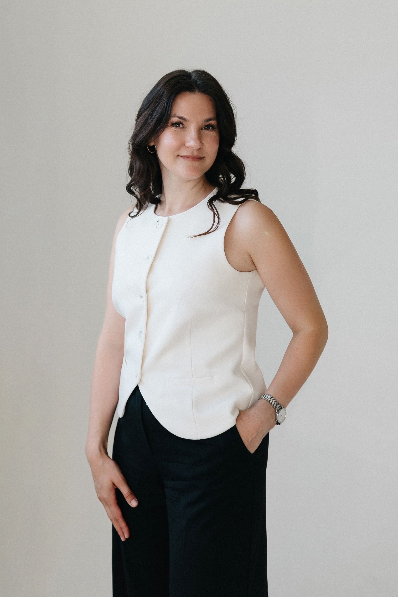

Елена Бельских
Стратегия и развитие продаж
Находит причины потерь в продажах. Определяет, что изменить в отделе и в каком порядке. Помогает собственнику составить план роста с учётом возможностей производства.
С чем помогает
- Аудит продаж и поиск ограничений роста
- Выбор задач и оценка ресурсов
- План развития отдела продаж
В работе с вами
Изучает воронку, загрузку менеджеров и работу руководителя. Обсуждает с собственником цели и ресурсы. По итогам предлагает план: что исправить сейчас и что потребуется для роста.
С чем можно обратиться
«Производство готово расти, а продажи стоят на месте». «Не понимаю, почему теряем клиентов». «Нужен план развития отдела».